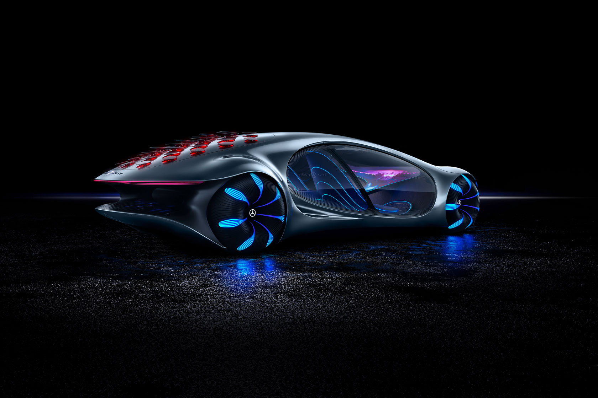

VISION AVTR - втілення екологічності

Неповторна архітектура дизайну VISION AVTR поєднує в собі інтер'єр і екстер'єр, створюючи цілісний світ на візуальному і емоційному рівні.
Завдяки інтелектуальному і повністю адаптивному розподілу крутного моменту, потужність чотирьох повністю індивідуально керованих двигунів керується не тільки найкращим чином з точки зору динаміки руху, але, перш за все, високоефективно. Інноваційний повний привід забезпечує абсолютно нову свободу і динаміку руху, в той же час гарантуючи максимально можливу безпеку.
Акумулятор повністю заряджається менше ніж за 15 хвилин. В результаті, маючи потужність близько 110 кВтг, VISION AVTR забезпечує електричну дистанцію понад 700 кілометрів.